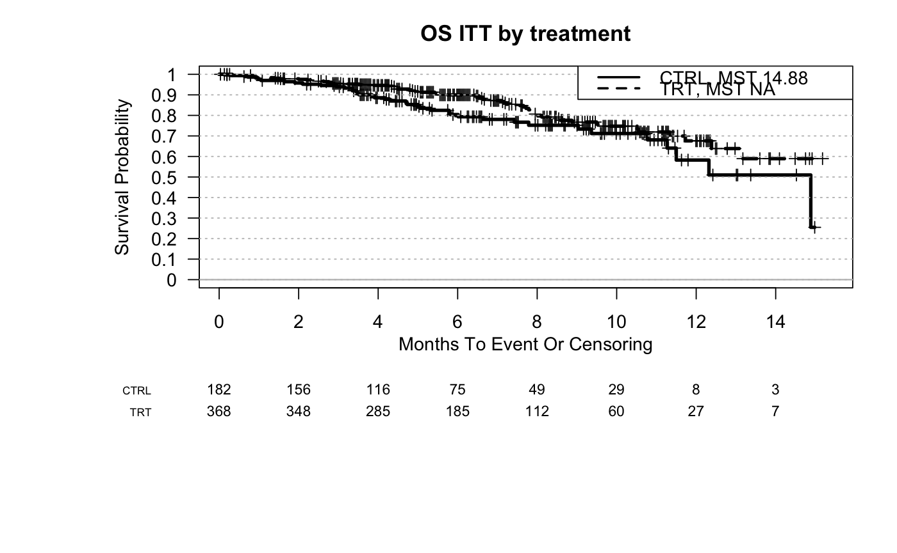

The function generates KM curves for full population or subgroups. The subgroups may be defined as a single factor or multiple factors.
PlotKM(data, tte, cens, trt = NULL, var = NULL, var.class = NULL, var.name = NULL, percentile.cutoff = 0.5, quantile.type = 2, cutoff.digits = 2, equal.in.high = TRUE, numerical.cutoff = NULL, varlist = NULL, varlist.levels = NULL, varlist.labels = NULL, bep = NULL, bep.indicator = 1, plot.nrisk = TRUE, nrisk.interval = 2, cex.nrisk = 0.8, plot.grid = TRUE, grids = seq(0, 1, 0.1), plot.legend = TRUE, legend.loc = "topright", legend.x = NULL, legend.y = NULL, col = NULL, lty = NULL, lwd = 3, surv.conf.type = "plain", xlab = "Months To Event Or Censoring", ylim = c(0, 1), xlim = NULL, ylab = "Survival Probability", main = "", sub = "", plot.median = FALSE, median.cex = 0.8, digits = 2, y.percentage = FALSE, pdf.name = NULL, pdf.param = list(height = 5), par.param = list(mar = c(12, 9, 3, 2)), return.data = FALSE, var.levels = NULL, var.labels = NULL)
| data | Input data frame. Rows are patients and columns are variables (e.g. demographics variables, time to event variables, biomarker variables, treatment indicator, etc.). One patient per row. |
|---|---|
| tte | column name that indicates the time to event variable |
| cens | column name that indicates the censoring variable associated to tte. 1 indicates event and 0 indicates censoring |
| trt | name of the treatment column. If trt is specified, the analysis will be performed within treatment arm. if it is NULL, the comparison will be performed using all samples. |
| var | name of the clinical covariate to test. name should be in the column names of data. entries with empty value (nchar()==0) will be imputed as NA |
| var.class | class of the variable. possible categories are "numeric", "categorical" and "ordered.factor". "ordered.factor" can be used to categorical variable with ordered levels - e.g. IC score 0/1/2/3. If class is ordered.factor , ordered.factor.levels need to be specified. If it is not specified, will try to use the class of the column. "numeric","integer" will be treated as "numeric" "logical""character","factor" will be treated as "categorical". |
| var.name | display name for the biomarker variable |
| percentile.cutoff | percentile to dichotomize continuous biomarker measure. This could be a vector with multiple elements. Values should be between 0 and 1 |
| quantile.type | an integer between 1 and 9 selecting one of the nine quantile algorithms. See |
| cutoff.digits | cutoff.digits:number of digits for rounding when calculating cutoff. will only be used when percentile.cutoff is specified. digits: number of digits for the summary statistics display |
| equal.in.high | whether include equal in high group. Default is TRUE. If it is TRUE, ">=" and "<" will be applied. Otherwise "<=" and ">" will be applied. |
| numerical.cutoff | raw value to dichotomize continuous biomarker measure. numerical.cutoff and percentile.cutoff cannot be both specified |
| varlist | name (or names) of the column which indicates the subgroups (e.g. treatment group). It is supposed to be a vector. This is an alternative option for specifying variable of interest (instead of specifying trt and var). trt and var will be ignored if varlist is not NULL. Compare to specifying trt and var, user can input any numbers of variables to varlist (a vector of column names). Any specified column is expected to be categorical. If one column is in character class and var.levels is not specified, it will be converted to a factor by factor() function. If varlist.levels is defined, the column will be converted to a factor following the level order in varlist.levels. In the legend, the subgroups will be ordered based on the order of factor levels. The parameter varlist can also be a vector of multiple column names. |
| varlist.levels | levels in the subgroups. It should be a vector if the parameter varlist is a single column name. It should be a list if more than one columns are specified in the prarameter varlist. The elements in the list should match the columns defined in parameter varlist. Each element of the list should contain a vector, elements in the vector defines levels of the corresponding column. |
| varlist.labels | preferred labels for the varlist. varlist.levels should be provided if subgroupd.labels is specified. The order in varlist.labels should match varlist.levels. It should be a vector if the parameter varlist is a single column name. It should be a list if more than one columns are specified in the prarameter varlist. The elements in the list should match the columns defined in parameter varlist. Each element of the list should contain a vector, elements in the vector defines labels of the corresponding column. |
| bep | name of the column which indicates subpopulation (e.g. biomarker evaluable population) If parameter bep is not defined, the KM curve(s) will be draw using all samples. If bep is defined, the KM curve(s) will be draw using only samples in BEP. |
| bep.indicator | In the subpopulation column, which value is used to define the biomarker evaluable population. |
| plot.nrisk | whether show number of patients at risk at the below the graph. If it is specified as TRUE, number of patients at risk will be summarized by subgroup. |
| nrisk.interval | interval to summarize number of patients at risk . Default is to summarize every 2 (months) |
| cex.nrisk | font size for the number of patients at risk. |
| plot.grid | whether show horizontal grids |
| grids | horizontal grids |
| plot.legend | whether show legend |
| legend.loc, legend.x, legend.y | legend location. a single keyword from the list "bottomright", "bottom", "bottomleft", "left", "topleft", "top", "topright", "right" and "center". |
| surv.conf.type | type of confidence interval. Default is "plain". See survfit |
| xlim, ylab, xlab, main, col, lty, lwd, sub, ylim | see |
| plot.median | whether show median TTE of each subgroup. (won't show if median TTE is NA) |
| median.cex | font size of marked median. This parameter will be ignored if plot.median=FALSE |
| digits | digits for rounding |
| y.percentage | whether show percentage in y axis (0-100) or probability (0-1). Default is probability |
| pdf.name | name of output pdf file. If it is NULL (default), the plots will be displayed but not saved as pdf |
| pdf.param | A list of parameters that define pdf graphics device. See |
| par.param | A list of parameters that define graphcial parameters. See |
| return.data | if it is TRUE, input data frame will be returned. If var is cont., an additional column called var_group will be added to the data form, which stores the dichotomized values |
| var.levels, var.labels | parameter for old versions, please dont use |
| ... | additional parameters for |
This function generates KM curve(s) for full population (when parameter var is not defined) or var (when parameter var is defined).
data(input) sample.data <- input PlotKM(data=sample.data, tte="OS",cens="OS.event", main="OS ITT by treatment", var="Arm")#> [1] ""